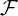
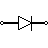
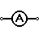
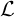
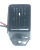

Circuit symbols
49 circuit symbols sourced as SVG files from Wikimedia Commons (IEC/ANSI conventions). No symbols are hand-drawn in this app.
Resistive & control
Elements that limit or divide current.ResistorIEC box
Resistor (ANSI)zig-zag
Potentiometerresistor + wiper
 Trimmer resistorpreset, small
Trimmer resistorpreset, small Thermistorresistor vs temperature
Thermistorresistor vs temperatureFusecartridge
Lamp / indicatorincandescent lamp
Switch (SPST)open contact
Switch, normally openopen blade
SPDT (changeover)one common, two paths
Pushbutton (NO)momentary normally-open
Pushbutton (NC)momentary normally-closed
 DIP switchmulti-pole package
DIP switchmulti-pole package Solder bridge0 Ω jumper
Solder bridge0 Ω jumper Relay (SPDT)changeover contacts
Relay (SPDT)changeover contactsEnergy storage
Elements that store charge or magnetic field, and the transformer that transfers both.Capacitortwo plates
Polarised capacitorcurved plate
Inductorcoil
Inductor with corecoil over iron
 Relay coilinductive coil
Relay coilinductive coil
Transformertwo coupled coilsSemiconductors & active
One-way and controlled conduction, plus gain and switching.Diodetriangle to bar
Zener diodebent cathode bar
LEDdiode + arrows
Photodiodeincoming arrows
NPN transistorarrow out
PNP transistorarrow in
MOSFETinsulated gate
 Thyristor (SCR)latching switch
Thyristor (SCR)latching switch Bridge rectifierfour-diode diamond
Bridge rectifierfour-diode diamond Operational amplifiertriangle, two inputs
Operational amplifiertriangle, two inputs
OptocouplerLED + photodiode isolationSources, returns & bits
Where voltage comes from, where it goes, and the passive bits in between. DC voltage sourcecircle with +−
DC voltage sourcecircle with +− AC sourcesine in circle
AC sourcesine in circleBattery celllong/short plate
 Groundthree bars
Groundthree barsProtective earthhatched earth
 Wire / conductorconductor
Wire / conductorconductor Crystal oscillatorpiezo element
Crystal oscillatorpiezo elementInstruments & transducers
Meters that measure, and parts that turn electricity into motion, sound or signals (and back).
Ammeterseries current meter
Voltmeterparallel voltage meter Ohmmeterresistance meter
Ohmmeterresistance meter Wattmeterpower meter
Wattmeterpower meter
Buzzeraudible alertSpeakersound output
 Microphonesound input
Microphonesound input Antennaradiating element
Antennaradiating element Motorelectromechanical drive
Motorelectromechanical drive Generatormechanical to electrical
Generatormechanical to electricalSymbol credits & licenses
Symbol artwork is downloaded from Wikimedia Commons (SVG electrical symbols). Each file keeps its original author and license.
| Symbol | Source file | Author | License |
|---|---|---|---|
| Resistor | Wikimedia Commons: Resistor symbol IEC.svg | Markus Kuhn | Public domain |
| Resistor (ANSI) | Wikimedia Commons: Resistor symbol America.svg | Omegatron | CC BY-SA 3.0 |
| Capacitor | Wikimedia Commons: Capacitor Symbol alternative.svg | Omegatron | Public domain |
| Polarised capacitor | Wikimedia Commons: Polarized capacitor symbol.svg | Omegatron | CC BY-SA 3.0 |
| Inductor | Wikimedia Commons: Inductor.svg | Omegatron | Public domain |
| Inductor with core | Wikimedia Commons: Inductor with iron core.svg | Wikimedia Commons contributors | CC BY-SA |
| Diode | Wikimedia Commons: Diode symbol.svg | Omegatron | CC BY-SA 3.0 / GFDL |
| Zener diode | Wikimedia Commons: Zener diode symbol.svg | Omegatron | CC BY-SA 3.0 |
| LED | Wikimedia Commons: LED symbol.svg | Ulfbastel | CC BY-SA 3.0 / GFDL |
| Photodiode | Wikimedia Commons: Photodiode symbol.svg | Omegatron | CC BY-SA 3.0 |
| NPN transistor | Wikimedia Commons: BJT NPN symbol.svg | Omegatron | CC BY-SA 3.0 |
| PNP transistor | Wikimedia Commons: BJT PNP symbol.svg | Omegatron | CC BY-SA 3.0 |
| MOSFET | Wikimedia Commons: IGFET N-Ch Enh (labelled/simplified) | Wikimedia Commons contributors | CC BY-SA |
| Switch (SPST) | Wikimedia Commons: SPST-Switch.svg | jjbeard | Public domain |
| Switch, normally open | Wikimedia Commons: SPST-Switch.svg | jjbeard | Public domain |
| SPDT (changeover) | Wikimedia Commons: SPDT-Switch.svg | jjbeard | Public domain |
| Pushbutton (NO) | Wikimedia Commons: Push-to-make switch electronic symbol.svg | Wikimedia Commons contributors | CC BY-SA |
| Pushbutton (NC) | Wikimedia Commons: Push-to-break switch electronic symbol.svg | Wikimedia Commons contributors | CC BY-SA |
| Relay (SPDT) | Wikimedia Commons: relay symbol | Wikimedia Commons contributors | CC BY-SA |
| Ground | Wikimedia Commons: Signal Ground.svg | Omegatron | Public domain |
| Protective earth | Wikimedia Commons: IEC 60417 - Ref-No 5019.svg | IEC / Wikimedia Commons contributors | see source |
| Battery cell | Wikimedia Commons: Battery symbol1.svg | jjbeard | Public domain |
| DC voltage source | Wikimedia Commons: Voltage Source (DC).svg | Wikimedia Commons contributors | CC BY-SA / PD |
| AC source | Wikimedia Commons: AC voltage source.svg | Omegatron | Public domain |
| Lamp / indicator | Wikimedia Commons: Lamp symbol.svg | Omegatron | Public domain |
| Fuse | Wikimedia Commons: Fuse symbol.svg | Wikimedia Commons contributors | CC BY-SA / PD |
| Wire / conductor | Wikimedia Commons: conductor symbol | Wikimedia Commons contributors | CC BY-SA / PD |
| Potentiometer | Wikimedia Commons: Potentiometer symbol Europe.svg | EnEdC | Public domain |
| Trimmer resistor | Wikimedia Commons: trimmer resistor symbol | Wikimedia Commons contributors | CC BY-SA / PD |
| Thermistor | Wikimedia Commons: Thermistor symbol | Wikimedia Commons contributors | CC BY-SA |
| DIP switch | Wikimedia Commons: DIP switch symbol.svg | Wikimedia Commons contributors | CC BY-SA |
| Solder bridge | Wikimedia Commons: solder bridge symbol | Wikimedia Commons contributors | CC BY-SA |
| Relay coil | Wikimedia Commons: relay coil symbol | Wikimedia Commons contributors | CC BY-SA |
| Thyristor (SCR) | Wikimedia Commons: Thyristor circuit symbol.svg | Wikimedia Commons contributors | CC BY-SA |
| Operational amplifier | Wikimedia Commons: Op-amp symbol.svg | Omegatron | CC BY-SA 3.0 |
| Optocoupler | Wikimedia Commons: Opto-isolator.svg | Wikimedia Commons contributors | CC BY-SA |
| Crystal oscillator | Wikimedia Commons: Crystal-oscillator.svg | Wikimedia Commons contributors | CC BY-SA |
| Transformer | Wikimedia Commons: Transformer Symbol.svg | Wikimedia Commons contributors | CC BY-SA / PD |
| Bridge rectifier | Wikimedia Commons: Diode bridge.svg | Wikimedia Commons contributors | CC BY-SA |
| Ammeter | Wikimedia Commons: Ammeter symbol.svg | Wikimedia Commons contributors | CC BY-SA / PD |
| Voltmeter | Wikimedia Commons: Voltmeter symbol.svg | Wikimedia Commons contributors | CC BY-SA / PD |
| Ohmmeter | Wikimedia Commons: Ohmmeter symbol.svg | Wikimedia Commons contributors | CC BY-SA / PD |
| Wattmeter | Wikimedia Commons: Wattmeter symbol.svg | Wikimedia Commons contributors | CC BY-SA / PD |
| Buzzer | Wikimedia Commons: Buzzer-IEC-Symbol.svg | Wikimedia Commons contributors | CC BY-SA |
| Speaker | Wikimedia Commons: Loudspeaker.svg | Wikimedia Commons contributors | CC BY-SA / PD |
| Microphone | Wikimedia Commons: Mic-IEC-Symbol.svg | Wikimedia Commons contributors | CC BY-SA |
| Antenna | Wikimedia Commons: Antenna symbol.svg | Wikimedia Commons contributors | CC BY-SA / PD |
| Motor | Wikimedia Commons: Motor Symbol.svg | Wikimedia Commons contributors | CC BY-SA / PD |
| Generator | Wikimedia Commons: Generator symbol.svg | Wikimedia Commons contributors | CC BY-SA / PD |


.svg){kind=link}


Full attribution is also provided in SYMBOLS.md.